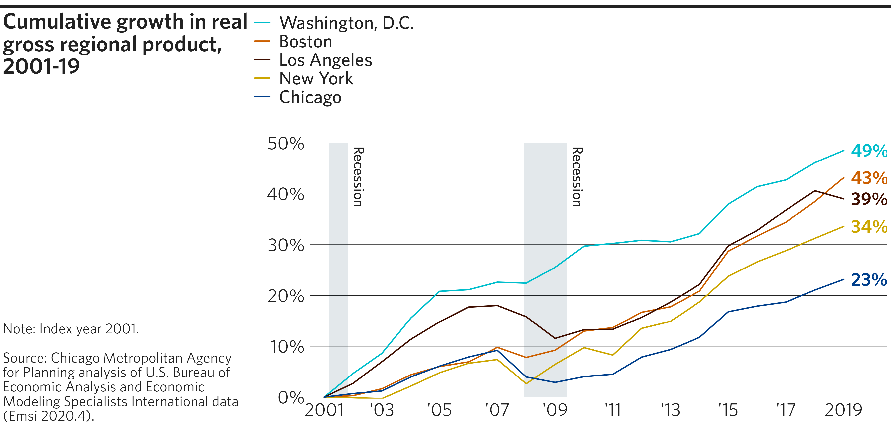
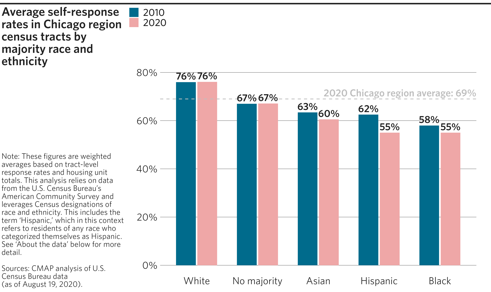
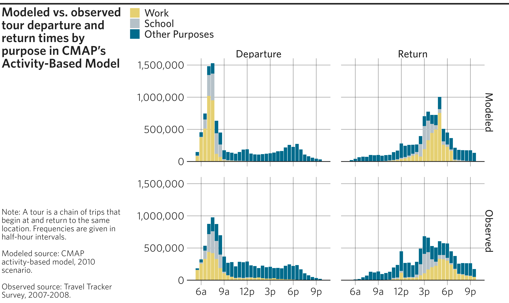

This vignette is a showcase of cmapplot’s full capabilities by replicating as closely as possible a variety of published CMAP graphics. The sample code here can be used as a starting point for creating a number of common chart types. Before running any of this code, be sure to load the both tidyverse and cmapplot packages with library(tidyverse) and library(cmapplot).
Line graph
Line graphs are useful for showing change over time, and are well-suited for combination with geom_text_lastonly() and geom_recessions() custom geoms. This particular plot also demonstrates the utility of a few other functions from the tidyverse that are quite useful when working with ggplot2::ggplot():
forcats::fct_reorder()andforcats::fct_reorder2()are useful to automatically order of factors withinmapping, which establishes legend order. (See also the Factors chapter of R for Data Science.)functions from the
scalespackage, such asscales::percent()andscales::label_percent(), which reformat numbers into attractive formats.ggplot2 scale functions, such as
ggplot2::scale_x_continuous(), which allow for control over the extent and breaks of each axis.
Example code
# Get example dataset, and create a relative GRP field
df <- peer_grp %>%
group_by(area) %>%
mutate(indexed = grp / first(grp) - 1)
# Create line plot
p <- ggplot(
data = df,
mapping = aes(
x = year,
y = indexed,
color = fct_reorder2(area, year, indexed), # Order legend by last `indexed` value in last `year`
label = scales::percent(indexed, accuracy = 1) # Format labels as percents with no decimals
)
) +
# Add geoms, making sure to keep recessions under lines
geom_recessions(ymin = 0, ymax = .5) +
geom_line(lineend = "round") +
geom_text_lastonly() +
# Establish an attractive Y scale
scale_y_continuous(
labels = scales::label_percent(accuracy = 1),
expand = expansion(add = 0) # No padding beyond specified limits
) +
# Establish an attractive X scale
scale_x_continuous(
breaks = seq(from = min(df$year), to = max(df$year), by = 2), # Set breaks to every other year
expand = expansion(add = c(0.5, 1.25)) # Set custom padding for L/R sides of axis
) +
# Apply CMAP theme and color palette
theme_cmap(
overrides = list(margin_panel_r = 3) # Shrink distance btwn gridlines ending and plotting extent
) +
cmap_color_discrete(palette = "legislation")
# Create final plot
finalize_plot(
plot = p,
title = "Cumulative growth in real gross regional product, 2001-19",
caption = "Note: Index year 2001.
<br><br>
Source: Chicago Metropolitan Agency for Planning analysis of U.S. Bureau
of Economic Analysis and Economic Modeling Specialists International data
(Emsi 2020.4).",
# Tweak plot layout
height = 4.5,
title_width = 2.6,
overrides = list(
margin_plot_r = 0, # Eliminate distance btwn plot and right side of image
margin_legend_b = 25 # Larger than usual gap between legend and plot
)
)
#> Warning in finalize_plot(plot = p, title = "Cumulative growth in real gross regional product, 2001-19", : The argument `title_width` is deprecated and will be removed in a future release.
#> Please update your code to use `sidebar_width` instead.

Area plot
Area plots are useful for showing changes in composition over time. (See also: Stacked bar chart.)
Example code
# Get & format example dataset
df <- cmapplot::transit_ridership %>%
filter(!is.na(ridership)) %>% # Remove entries with no ridership (in this case,
# values before PACE ADA is broken out in the data)
# Change system names to desired legend output
mutate(system = recode(system,
"cta_bus" = "CTA Bus",
"cta_rail" = "CTA Rail",
"metra" = "Metra",
"pace" = "Pace",
"pace_ada" = "Pace ADA")) %>%
# Make into factor with defined order for plotting (top to bottom)
mutate(system = factor(system, levels = c(
"Pace ADA", "Pace", "Metra", "CTA Rail", "CTA Bus"
)))
# Create area plot
p <- ggplot(data = df, mapping = aes(x = year, y = ridership, fill = system)) +
# Add the area plot
geom_area() +
# Add the desired color palette
cmap_fill_discrete(palette = "legislation") +
# Apply the CMAP theme
theme_cmap(gridlines = "hv") +
# Reverse the order of the legend (optional)
guides(fill = guide_legend(reverse = TRUE))
# Create final plot
finalize_plot(
plot = p,
title = "Annual unlinked passenger trips on Regional Transportation Authority
systems over time, by service board (in millions).",
caption = "Source: CMAP analysis of RTA data.")
Scatterplot
Scatterplots show relationships between two numeric variables, plotted on the x- and y-axes. Additionally, color and size can be used to represent additional variables.
Example code
# Create example dataset
df <- tibble(
REGION = c("Boston", "Chicago", "Los Angeles", "New York", "Washington, D.C."),
TOT_POP_DIFF = c(41695, -114387, 110955, 322308, 198931),
LF_POP_DIFF = c(46296, -68524, 113307, 315163, 173036),
LF_RATE_DIFF_MAG = c(0.5349653, 0.684531, 0.4036736, 0.5853668, 0.0386677),
LF_RATE_DIFF_DIR = c("Increase", "Increase", "Increase", "Increase", "Decrease")
)
# Create scatterplot
p <- ggplot(data = df, mapping = aes(x = TOT_POP_DIFF, y = LF_POP_DIFF)) +
# Apply CMAP theme with optional arguments
theme_cmap(
xlab = "Change in population aged 25-54", # Label x-axis
ylab = "Change in size of labor force aged 25-54", # Label y-axis
hline = 0, vline = 0, # Add horizontal and vertical origin lines at 0
gridlines = "hv" # Include both horizontal and vertical gridlines
) +
# Adding points after theme_cmap() puts points in front of origin lines
geom_point(mapping = aes(
size = LF_RATE_DIFF_MAG, # Associate point size with a variable
color = LF_RATE_DIFF_DIR # Associate point color with a variable
)) +
geom_text(mapping = aes(label = REGION)) + # Label each point with its name
# Manually adjust point size/color aesthetics and legend items
scale_size(range = c(5, 25)) + # Minimum/maximum size of points
scale_color_manual(
values = c(`Increase` = cmap_palettes$legislation[1], # Modify point colors
`Decrease` = cmap_palettes$legislation[2]),
breaks = c("Increase", "Decrease"), # Specify order of legend items
labels = c("Increase in labor force\nparticipation rate", # Modify legend labels for each color
"Decrease in labor force\nparticipation rate") # ("\n" inserts a line break)
) +
guides(size = "none", # Omit size aesthetic from legend
color = guide_legend(override.aes = list(size = 5))) + # Increase legend point size
# Adjust gridlines and their labels
scale_x_continuous(labels = scales::label_comma(), # Format x-axis numbers with commas
limits = c(-200000, 400000), # Set x-axis limits
n.breaks = 7, # Set number of gridlines on x-axis
expand = expansion(mult = 0)) + # No padding beyond specified limits
scale_y_continuous(labels = scales::label_comma(), # Format y-axis numbers with commas
limits = c(-200000, 400000), # Set y-axis limits
n.breaks = 7, # Set number of gridlines on y-axis
expand = expansion(mult = 0)) + # No padding beyond specified limits
theme(axis.text.x = element_text(
angle = 45, # Set an angle for the x-axis numbers,
hjust = 1, # a horizontal justification (between 0-1, trial & error),
vjust = 1 # and a vertical justification (between 0-1, trial & error).
))
# Create final plot
finalize_plot(
plot = p,
title = "Changes in population, size of labor force, and labor force
participation rate among prime working age residents (ages 25-54), Chicago
and select Metropolitan Statistical Areas, 2006-10 to 2013-17",
caption = "Size of bubble represents the absolute value of percentage point
change in labor force participation rate.
<br><br>
Source: Chicago Metropolitan Agency for Planning analysis of American
Community Survey data, five-year estimates, 2006-10 and 2013-17."
)

Highlighted bar chart
The cmapplot package includes functionality for highlighting specified data using a distinct color. This is useful to compare Chicago against peer regions, for example.
This plot also utilizes geom_label, an alternative to geom_text that draws a rectangle behind each label to help it stand out from gridlines where they overlap.
Example code
# Create example dataset
df <- tibble(
REGION = c("Boston", "Chicago", "Los Angeles", "New York", "Washington, D.C."),
MED_HH_INC = c(77809, 63327, 62216, 69211, 93804)
)
# Create highlighted bar chart
p <- ggplot(data = df,
mapping = aes(
x = reorder(REGION, -MED_HH_INC), # Order race by decreasing income
y = MED_HH_INC
)) +
# Add bars
geom_col(mapping = aes(fill = REGION), # Fill must be set for a highlighted chart
width = 0.5) +
# Add horizontal line at specified value
geom_hline(yintercept = 55322) +
# Label bars. `geom_label` draws a rectangle behind the label, to prevent
# overlap with gridlines
geom_label(
mapping = aes(
y = MED_HH_INC + 2600, # Offset by trial & error
label = scales::label_dollar()(MED_HH_INC) # Format labels as dollars
),
hjust = .5, # Center label (0 = left aligned, 1 = right aligned)
label.size = 0 # necessary to not draw a line around the label box
) +
# Annotate the horizontal line
annotate(
geom = "text",
x = 5.6, y = 52822, # Specify position of annotation (trial & error)
label = "U.S. Average $55,322",
hjust = 1 # Right align the text
) +
# Wrap long labels along the x-axis
scale_x_discrete(labels = scales::label_wrap(12)) +
# Format y-axis numbers as percentages, and set axis limits
scale_y_continuous(labels = scales::label_dollar(),
limits = c(0, 100000),
breaks = seq(from = 0, to = 100000, by = 10000)) +
# Apply CMAP theme and color palette
theme_cmap() +
cmap_fill_highlight(field = df$REGION, value = "Chicago") +
# Omit fill aesthetic from legend
guides(fill = "none")
# Create final plot
finalize_plot(
plot = p,
title = "Median household income in select metropolitan statistical areas, 2016",
caption = "Source: Chicago Metropolitan Agency for Planning analysis of U.S.
Census Bureau data."
)

Clustered bar chart
Clustered bar charts allow for multiple variables to be graphed adjacent to one another for the same category. For example, in the chart below, we show Census self-response rates by demogrphic group, with responses from 2020 adjacent to responses from 2010 for each sub-group.
Note that ggplot2 has two elements that can be used to generate bar charts: geom_col() and geom_bar(). In most cases, geom_col() will be correct, as it will graph the values supplied as heights on the x- or y-axis by default. geom_bar() can do the same, but only if the user sets stat = "identity".
The chart below also demonstrates three other ggplot2 tools that may be of interest: adding value labels above each of the bars; adding a value line (in this case, the regional average at 69%); and adding an annotation above that line to indicate what that line represents.
Example code
# Create example dataset
df <- tibble(
RACE = c("White", "White", "No majority", "No majority", "Asian", "Asian", "Hispanic", "Hispanic", "Black", "Black"),
YEAR = c("2010", "2020", "2010", "2020", "2010", "2020", "2010", "2020", "2010", "2020"),
RESPONSE = c(.760, .761, .670, .671, .634, .605, .625, .550, .580, .550)
) %>%
mutate(LABEL = sprintf("%i%%", as.integer(round(RESPONSE * 100,0))))
# Create clustered bar chart
p <- ggplot(data = df,
mapping = aes(
x = reorder(RACE, -RESPONSE), # Order race by decreasing response rate
y = RESPONSE, fill = YEAR
)) +
# Add gap between bars in same cluster
geom_col(width = 0.65, # Width should be less than position_dodge(width)
position = position_dodge(width = 0.7)) + # Difference of 0.05 is usually sufficient
# Add horizontal dashed line at specified value
geom_hline(yintercept = .69, linetype = "dashed", color = "gray") +
# Add and format value labels for each bar on the graph
geom_text(
mapping = aes(
label = LABEL,
y = RESPONSE + .025), # Shift upward to eliminate overlap
position = position_dodge(width = 0.7), # Match geom_col's width
hjust = .5 # Center label (0 = left aligned, 1 = right aligned)
) +
# Annotate the dashed line
annotate(
geom = "text",
x = 5.6, y = 0.715, # Specify position of annotation (trial & error)
label = "2020 Chicago region average: 69%",
hjust = 1, # Right align the text
color = "gray" # set the color of the text (here, matched to above)
) +
# Format y-axis numbers as percentages
scale_y_continuous(labels = scales::label_percent()) +
# Apply CMAP theme and color palette
theme_cmap() +
cmap_fill_discrete(palette = "governance")
# Create final plot
finalize_plot(
plot = p,
title = "Average self-response rates in Chicago region census tracts by
majority race and ethnicity",
caption = "Note: These figures are weighted averages based on tract-level
response rates and housing unit totals. This analysis relies on data from
the U.S. Census Bureau's American Community Survey and leverages Census
designations of race and ethnicity. This includes the term 'Hispanic,'
which in this context refers to residents of any race who categorized
themselves as Hispanic. See 'About the data' below for more detail.
<br><br>
Sources: CMAP analysis of U.S. Census Bureau data<br>
(as of August 19, 2020).",
# Note that we used two "<br>" tags to create a line break and empty line
# between sources and notes.
title_width = 2.4, # Manually specify title width
overrides = list(margin_legend_b = 50) # Increase margin below legend
)
#> Warning in finalize_plot(plot = p, title = "Average self-response rates in Chicago region census tracts by\n majority race and ethnicity", : The argument `title_width` is deprecated and will be removed in a future release.
#> Please update your code to use `sidebar_width` instead.

Stacked bar chart
Stacked bar charts allow for the bars to represent multiple variables: the sub-bars represent individual components of a group, and the total bar height represents the sum of all of the group’s components.
Example code
# Get & format example dataset from ON TO 2050 indicators GitHub repository
df <- read_csv("https://raw.githubusercontent.com/CMAP-REPOS/ONTO2050-indicators/master/non-single-occupancy-modes/non-single-occupancy-modes.csv") %>%
as_tibble() %>%
pivot_longer(cols = starts_with("PCT_NONSOV"),
names_to = "MODE",
names_prefix = "PCT_NONSOV_",
values_to = "PCT_NONSOV") %>%
filter(MODE != "TOTAL",
ACTUAL_OR_TARGET == "Actual") %>%
mutate(MODE = recode(MODE,
"CARPOOL" = "Carpool",
"TRANSIT" = "Public transportation",
"BIKE" = "Bicycle",
"WALK" = "Walk",
"HOME" = "Work at home")) %>%
mutate(MODE = factor(MODE, levels = c(
"Work at home", "Walk", "Bicycle", "Public transportation", "Carpool"
)))
# Create stacked bar chart
p <- ggplot(data = df, aes(x = YEAR, y = PCT_NONSOV, fill = MODE)) +
# Add bars
geom_col() +
# Format y-axis numbers as percentages, and set axis limits
scale_y_continuous(labels = scales::label_percent(accuracy = 1, scale = 1),
limits = c(0, 35),
breaks = seq(from = 0, to = 35, by = 5)) +
# Label every bar along x-axis
scale_x_continuous(n.breaks = length(unique(df$YEAR))) +
# Apply CMAP theme and color palette
theme_cmap() +
cmap_fill_discrete(palette = "legislation")
# Create final plot
finalize_plot(
plot = p,
title = "Percentage of trips to work via non-single occupancy vehicle
(non-SOV) modes, 2009-2018",
caption = "Source: CMAP analysis of American Community Survey (ACS) data
for the 7-county CMAP region, 1-year estimates.
<br><br>
Note: The Kendall County portion of this data is based on ACS 5-year
estimates, since 1-year estimates of mode share are not consistently
available there due to its relatively small population."
)

Faceted histograms
While statistics such as mean or median are useful for summarizing, they just scratch the surface of trends happening within a large, diverse dataset. Histograms are great for visualizing the distribution of a metric across a large sample. This particular example shows the distribution of tour beginnings and endings over the continuous variable of time. However, the continuous variable has already been made discrete by binning time in half-hour increments and summing the tours in each bin. In cases like this, geom_col() is the geom that makes the most sense. If your variable comes in a true continuous form, geom_histogram() is appropriate, and allows flexibility for bin sizes. If your variable is discrete/categorical and has not been summarized, geom_bar() is the best choice.
To make histograms even more interesting, split your data up by important categories and visualize them side-by-side to understand how distributions vary for different groups. facet_grid() is used here because comparisons are being made across the values of two discrete variables. If you want to split up your graph by only one variable, facet_wrap() will do.
Some smaller formatting choices to pay attention to:
dplyr::recode_factor()changes the column labels to “Departure” and “Return” for clarity.forcats::fct_rev()reverses the order in which the factors appear on the graph. Character/text variables can be converted to factors byfactor()orforcats::as_factor()(which use different rules to determine the factor order).Similar to graphs above which needed special formatting on their axis labels,
ggplot2::scale_x_time()is used to manage the range, breaks, and labels of the x-axis, specifically when that axis represents time.lubridate::hm()converts strings into time period objects. Lubridate is a very useful package if you need to manage dates and times. Learn more about it in R for Data Science.
Example code
# Get & format example dataset from ABM validation report GitHub repository
df <- read_csv("https://raw.githubusercontent.com/CMAP-REPOS/cmap_abm_report/master/data/csv37_tours_tod.csv") %>%
filter(cat != "all") %>%
mutate(
purpose = fct_rev(recode_factor(factor(cat),
`work` = "Work",
`school` = "School",
.default = "Other Purposes",
.ordered = TRUE)),
dep_arr = recode_factor(factor(subgroup),
`Model-Depart` = "Departure",
`Survey-Depart` = "Departure",
`Model-Arrive` = "Return",
`Survey-Arrive` = "Return",
.ordered = TRUE),
obs_mod = recode_factor(factor(subgroup),
`Model-Depart` = "Modeled",
`Model-Arrive` = "Modeled",
`Survey-Depart` = "Observed",
`Survey-Arrive` = "Observed",
.ordered = TRUE)
)
# Create faceted histograms
p <- ggplot(data = df, mapping = aes(x = hours, y = value)) +
# Add histogram bars
geom_col( # Or geom_histogram() if data is not already grouped
mapping = aes(fill = purpose) # Color bars by tour purpose
) +
# Facet by departure/arrival and modeled/observed
facet_grid(rows = vars(obs_mod), cols = vars(dep_arr)) +
# Apply CMAP theme and color palette
theme_cmap(
hline = 0, # Add origin line at 0 for aesthetic reasons
gridlines = "hv", # Show horizontal and vertical gridlines
# Supply an optional "..." argument passed to ggplot2::theme()
strip.text = element_text(
hjust = 0.5 # Center facet labels at axis midpoint
)
) +
cmap_fill_discrete("friday", reverse = TRUE) +
# Adjust axis scales/labels
scale_y_continuous(labels = scales::label_comma()) +
scale_x_time(
limits = lubridate::hm(c("05:00", "22:00")),
breaks = lubridate::hm(c("06:00", "09:00", "12:00", "15:00", "18:00", "21:00")),
labels = c("6a", "9a", "12p", "3p", "6p", "9p")
) +
# Reverse legend order
guides(fill = guide_legend(reverse = TRUE))
# Create final plot
finalize_plot(
plot = p,
title = "Modeled vs. observed tour departure and return times by purpose in
CMAP's Activity-Based Model",
caption = "Note: A tour is a chain of trips that begin at and return to the
same location. Frequencies are given in half-hour intervals.
<br><br>
Modeled source: CMAP activity-based model, 2010 scenario.
<br><br>
Observed source: Travel Tracker Survey, 2007-2008."
)
Donut chart (or pie chart)
The donut chart is a CMAP favorite for visualizing percentages of a whole. It is a variant of the pie chart, where the center has been replaced by a hole. While ggplot2 does not have a native geom for donut or pie charts, they can be constructed with a combination of geom_rect() and coord_polar().
Example code
# Create example dataset
df <- tibble(
SECTOR = c("Stationary energy", "Transportation", "Waste"),
EMISSIONS = c(81.9, 34.3, 3.2)
)
# Create donut chart
p <- df %>%
# Compute temporary variables needed for constructing the donut segments
mutate(
fraction = EMISSIONS / sum(EMISSIONS),
xmax = cumsum(fraction),
xmin = lag(xmax, default = 0)
) %>%
ggplot(mapping = aes(fill=SECTOR)) +
# Create donut segments as rectangles of proportional width, fixed height
geom_rect(mapping = aes(xmin = xmin, xmax = xmax,
ymin = 2, ymax = 3)) +
# Add formatted labels to center of each donut segment
geom_text(mapping = aes(label = sprintf("%.0f%%", fraction * 100),
x = (xmax+xmin)/2,
y = 2.5),
color = "white") + # Change label color
# Switch from rectangular to circular grid, centered at y=0
# `start` (in radians) by trial and error to match original graphic
coord_polar(start = 4.88) +
ylim(c(0, 3)) + # Without this, result would be a pie chart
# Apply CMAP theme (without gridlines) and a color palette
theme_cmap(gridline = "none") +
cmap_fill_discrete(palette = "community") +
# Turn off axis labels
theme(axis.text = element_blank())
# Create final plot
finalize_plot(
plot = p,
title = "Regional emissions by sector, 2015",
caption = "Source: Chicago Metropolitan Agency for Planning.",
caption_valign = "top")
#> Warning in finalize_plot(plot = p, title = "Regional emissions by sector, 2015", : The argument `caption_valign` is deprecated and will be removed in a future release.
#> Please update your code to use `caption_align` (with a value between 0-1) instead.

Race and ethnicity time series line graph
Given CMAP’s focus on inclusive growth, many of our graphics depict data by race and ethnicity. Notably, several of the ON TO 2050 indicators track trends over time by race and ethnicity. For these cases, the cmapplot package includes a special race/ethnicity color palette that can be applied to the color or fill aesthetics of any geom.
Example code
# Get & format example dataset from ON TO 2050 indicators GitHub repository
df <- read_csv("https://raw.githubusercontent.com/CMAP-REPOS/ONTO2050-indicators/master/household-income-race-ethnicity/household-income-race-ethnicity.csv") %>%
as_tibble() %>%
pivot_longer(cols = starts_with("MED_HH_INC"),
names_to = "RACE_ETH",
names_prefix = "MED_HH_INC_",
values_to = "MED_HH_INC") %>%
mutate(RACE_ETH = recode(RACE_ETH,
"ALL" = "All",
"ASIAN" = "Asian",
"BLACK" = "Black",
"HISPANIC" = "Hispanic",
"WHITE" = "White (non-Hispanic)"))
# Create line graph with race/ethnicity palette
p <- ggplot(data = df, mapping = aes(x = YEAR, y = MED_HH_INC, color = RACE_ETH)) +
# Add lines and label final value with dollar formatting
geom_line() +
geom_text_lastonly(mapping = aes(label = scales::label_dollar()(MED_HH_INC)),
add_points = TRUE) +
# Don't clip labels
coord_cartesian(clip = "off") +
# Manually set axis limits and format y-axis labels as dollars
scale_x_continuous(limits = c(2005, 2020)) +
scale_y_continuous(limits = c(0, 100000),
breaks = seq(from = 0, to = 100000, by = 10000),
labels = scales::label_dollar()) +
# Apply CMAP theme and apply race/ethnicity palette
theme_cmap() +
cmap_color_race(white = "White (non-Hispanic)",
black = "Black",
hispanic = "Hispanic",
asian = "Asian",
other = "All")
# Create final plot
finalize_plot(
plot = p,
title = "Median household income by race and ethnicity, 2006-2019, in 2016
inflation-adjusted dollars",
caption = "Source: CMAP analysis of American Community Survey data, 1-year
estimates."
)